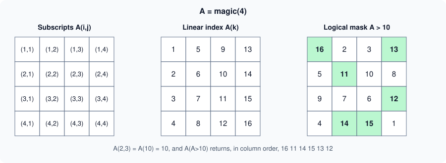

Indexing
|
This content was generated with the assistance of AI and should be verified against the official documentation before being relied on in production. |
Written against MATLAB R2026b. The sessions below were run in GNU Octave 11.3.0 (MATLAB code that Octave also accepts) and show Octave’s output. Error messages are quoted from Octave where they were run and are labelled "not run here" where the MATLAB text is given; MATLAB’s messages and Octave’s differ. Array indices in MATLAB start at 1 and are written in parentheses.
Indexing is how you read and change part of an array, and it is the main tool that replaces explicit loops (see Vectorization and Preallocation). There are three ways to say which elements you want: by position with subscripts (A(2,3)), by linear index (A(7)), and by a logical mask (A(A>10)). They can be mixed in one expression, and the same forms work on the left-hand side of an assignment. The array model and the storage order that make linear indexing meaningful are on Matrices and Arrays.
Throughout this page, A = magic(4):
A =
16 2 3 13
5 11 10 8
9 7 6 12
4 14 15 1Subscript indexing
A(i,j) is the element in row i, column j. A subscript can be a scalar, a vector of positions, or a colon, which means all the elements of that dimension. end inside the parentheses is the last position of the dimension it is in, so A(end,1) is the first element of the last row and A(2:end-1,:) drops the first and last row. end can appear in an expression (A(end-1,end), x(round(end/2))). When indexing calls are nested (A(B(end))), end belongs to the nearest enclosing array: here B.
A = magic(4);
A(2,3)
A(end,1)
A(:,2)'
A(2:3,[1 4])Octave 11.3.0 output:
ans = 10
ans = 4
ans =
2 11 7 14
ans =
5 8
9 12Using two vectors, A(rows,cols), selects the rectangular block that is the combination of those rows and columns (here rows 2 and 3, columns 1 and 4), not the pairs (2,1) and (3,4). To pick scattered elements by pairs, convert the pairs to linear indices with sub2ind (below).
Linear indexing
A single subscript addresses the array as if it were one column in storage order, which is column-major: the elements of column 1, then column 2, and so on. For a 4-by-4 matrix A(7) is the element in row 3, column 2. A(end) is the last element. A(:) is the whole array as a single column, in that order, which is the standard way to flatten an array (and, on the left-hand side, A(:) = values fills the array without changing its shape).
A(7)
A(end)
A(:)'
w = zeros(2,2); w(:) = 5Octave 11.3.0 output:
ans = 7
ans = 1
ans =
16 5 9 4 2 11 7 14 3 10 6 15 13 8 12 1
w =
5 5
5 5sub2ind(sz, i, j) converts subscripts to the linear index, and [i,j] = ind2sub(sz, k) converts back. Both take the size vector and work with vectors of subscripts, so they are the right tool for picking scattered elements.
k = sub2ind(size(A), 2, 3)
[i2,j2] = ind2sub(size(A), 7)Octave 11.3.0 output:
k = 10
i2 = 3
j2 = 2
The figure is an original schematic, not a MathWorks figure.
The detailed rules: the shape of the result
The shape of A(idx) follows these rules from the documentation.
-
If
Ais a matrix (or higher) andidxis an array of subscripts, thenA(idx)has the same size asidx.A(4:6)is a 1-by-3 row;A([1 2; 3 4])is 2-by-2. -
If both
Aandidxare vectors,A(idx)has the number of elements ofidxbut the orientation ofA. IfAis a column,A(4:6)is a column even though4:6is a row. -
A(id1,id2)is a submatrix withnumel(id1)rows andnumel(id2)columns, andA(id1,id2,...,idn)has sizenumel(id1)-by-…-by-numel(idn). -
The number of subscripts must not exceed
ndims(A), except that any number of trailing subscripts equal to 1 are allowed. Fewer subscripts than dimensions are allowed: the last subscript then addresses the remaining dimensions as if they were collapsed into one. For an m-by-n-by-p array,A(2,:)is a 1-by-(n·p) row: row 2 of the first page, followed by row 2 of each later page.
q = (1:6)'; q([4 5 6])'
x = 1:5; x([1 1 2])Octave 11.3.0 output: q([4 5 6]) is indexed by a row but q is a column, so the result is a column (transposed back for display), and repeating an index repeats the element:
ans =
4 5 6
ans =
1 1 2Logical indexing and masks
A logical array of the same size as the array selects the elements where it is true; the result is always a column vector, taken in column order (see Logical Type and Conditions). The mask is usually the result of a comparison, and it can be stored in a variable and reused.
M = A>10
A(M)'
A(A>10) = 0Octave 11.3.0 output:
M =
1 0 0 1
0 1 0 0
0 0 0 1
0 1 1 0
ans =
16 11 14 15 13 12
A =
0 2 3 0
5 0 10 8
9 7 6 0
4 0 0 1The mask may be shorter than the array (the missing positions are treated as false) but not longer if any extra element is true. Masks combine with the element-wise operators &, | and ~ (not &&, see Operators and Precedence).
find
find(X) returns the linear indices of the nonzero (or true) elements, in column order. With a second argument n it returns the first n, and with "first" or "last" as a third argument the first or last n. With two or three outputs it returns the row and column subscripts (and the values).
A = magic(4);
idx = find(A>10)'
[r,c] = find(A>14)
find(A>5, 2)'
find(A>5, 2, 'last')'Octave 11.3.0 output:
idx =
1 6 8 12 13 15
r =
1
4
c =
1
3
ans =
1 3
ans =
14 15find is the right tool when you need the positions; a plain logical mask is faster and simpler when you only need the elements. any(mask) is cheaper than ~isempty(find(mask)). When nothing matches, find returns an empty array, and x(find(mask)) is the same as x(mask).
Indexed assignment
The same forms work on the left of =. The right side must either be a scalar, which is copied to every selected position (scalar expansion), or have the same number of elements as the selection. Indexing outside the current size on the left grows the array.
B = zeros(3);
B(2,:) = [1 2 3]; % a row
B(:,1) = 9; % scalar expansion
B(B==0) = -1; % logical assignmentIf the numbers of elements differ, MATLAB raises an error of the form Unable to perform assignment because the left and right sides have a different number of elements. (not run here); Octave’s wording is =: nonconformant arguments.
-
Growing. Assigning past the end enlarges the array and fills the gap with zeros: with
v = 1:5, the statementv(7) = 9gives1 2 3 4 5 0 9(Octave 11.3.0 output). A matrix grows to the new subscripts, filling the new positions with zeros. This is convenient but each growth may allocate and copy the whole array, so building a result element by element in a loop is slow for large sizes; preallocate withzeros(n,1)(see Vectorization and Preallocation). Appending withx(end+1) = valueis fine for a few items. -
Deleting. Assigning the empty array
[]to a selection deletes it; the remaining elements close up. Deleting must remove whole rows or columns of a matrix (B(2,:) = []), or elements of a vector, because the result has to stay rectangular. Deleting a single element of a matrix withB(1,2) = []is an error (a null assignment can have only one non-colon index); deleting with a linear index reshapes the result into a row.
B = magic(3); B(2,:) = []
v = 1:5; v(7) = 9
v(2) = []Octave 11.3.0 output:
B =
8 1 6
4 9 2
v =
1 2 3 4 5 0 9
v =
1 3 4 5 0 9Out-of-range and invalid subscripts
Reading outside an array, or using an index that is not a positive integer or a logical, is an error, with the identifier MATLAB:badsubscript for most of them.
try, A(5,1), catch e, disp(e.message), end
try, A(17), catch e, disp(e.message), end
try, A(0), catch e, disp(e.message), end
try, A(1.5), catch e, disp(e.message), endOctave 11.3.0 output:
A(5,_): out of bound 4 (dimensions are 4x4)
A(17): out of bound 16 (dimensions are 4x4)
A(0): subscripts must be either integers 1 to (2^63)-1 or logicals
A(1.5): subscripts must be either integers 1 to (2^63)-1 or logicalsIn MATLAB the corresponding messages are of the forms Index in position 1 exceeds array bounds. Index must not exceed 4. for the subscript form, Index exceeds the number of array elements. Index must not exceed 16. for the linear form, and Index in position 1 is invalid. Array indices must be positive integers or logical values. for 0 and for non-integers (not run here; the wording depends on the release). The most common cause is a loop that runs one step too far (for k = 1:n+1) or an off-by-one from another language’s zero-based indices. A non-integer index that comes from floating-point arithmetic (idx = 0.1*30) is the other usual suspect: round it with round.
Indexing into function call results
MATLAB does not accept parentheses or curly braces directly after a function call: magic(4)(2,:) and size(A)(1) are errors in MATLAB (not run here). Store the result in a variable and index the variable, or use the function’s own arguments when it has them (size(A,1) returns the number of rows directly). The one form MATLAB allows is dot indexing on the result of a call made with parentheses, when the result supports it (a structure, a table or an object); further indexing can follow, as in the documentation’s table(rand(10,2)).Var1(3,:).
M = magic(4);
v1 = M(2,:)
sz = size(M);
nRows = sz(1)
nRows = size(M, 1)
ny = struct("nx", 50, "ny", 30).nyOctave 11.3.0 output:
v1 =
5 11 10 8
nRows = 4
nRows = 4
ny = 30The last line is dot indexing on the structure that struct returns. GNU Octave also accepts the chained forms magic(4)(2,:) and size(A)(1), so code written in Octave can use them and then fail in MATLAB; see GNU Octave Compatibility.
The heatflow plate: interior and boundary
The heat equation on the plate is solved on the interior points; the edge values are boundary conditions. Indexing expresses both without loops. With a 5-by-6 grid:
T = zeros(5,6); T(1,:) = 100; T(2:end-1,2:end-1) = 1;
T
mask = false(5,6); mask(1,:)=true; mask(end,:)=true; mask(:,1)=true; mask(:,end)=true;
nnz(mask)Octave 11.3.0 output:
T =
100 100 100 100 100 100
0 1 1 1 1 0
0 1 1 1 1 0
0 1 1 1 1 0
0 0 0 0 0 0
ans = 18T(2:end-1,2:end-1) is the interior block, and the five-point stencil that updates it is written with shifted blocks of the same size: T(1:end-2,2:end-1), T(3:end,2:end-1), T(2:end-1,1:end-2) and T(2:end-1,3:end). The mask has 2*(6+5) - 4 = 18 true elements, the boundary points, and T(mask) = 100 sets them all in one statement. The same computation written with loops, with logical masks and with implicit expansion is the subject of Vectorization and Preallocation.
Pitfalls
-
Zero and non-integer indices (
MATLAB:badsubscript). -
A(idx)returns the orientation ofAfor two vectors, but the shape ofidxotherwise. -
Logical masks return columns, even for a matrix.
-
A(1,:)versusA(:,1): row versus column, easy to swap. -
endin a nested index refers to the nearest array. -
Deleting one element of a matrix with two subscripts fails.
-
Growing in a loop is slow; preallocate.
-
findreturns linear indices: with a matrix and one output, use them asA(idx), not as row numbers. -
Using the number of elements
numel(A)as a row count in a matrix; usesize(A,1).
Where older books differ
Older books describe end and find the same way, but they recommend find for almost every condition (A(find(A>10))) where a logical mask is simpler and usually faster, and they describe logical indexing as a trick rather than the main form. They also show sub2ind and ind2sub for scattered picks and do not show indexing into function results.